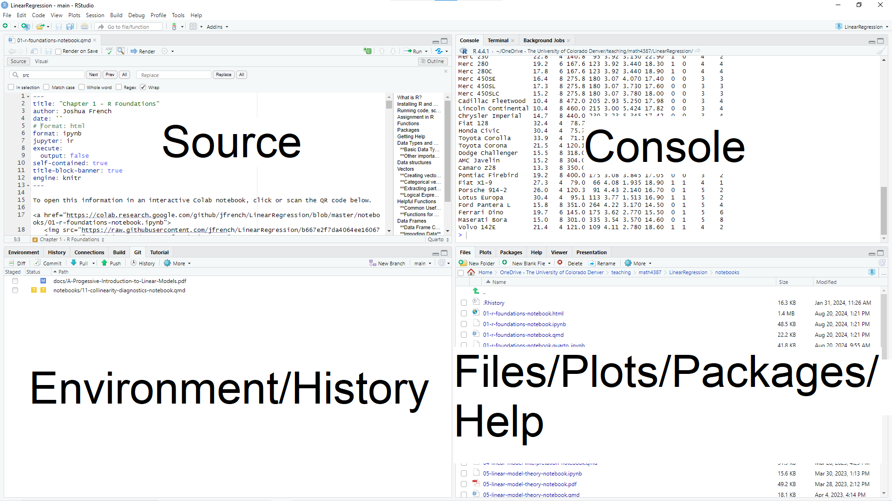
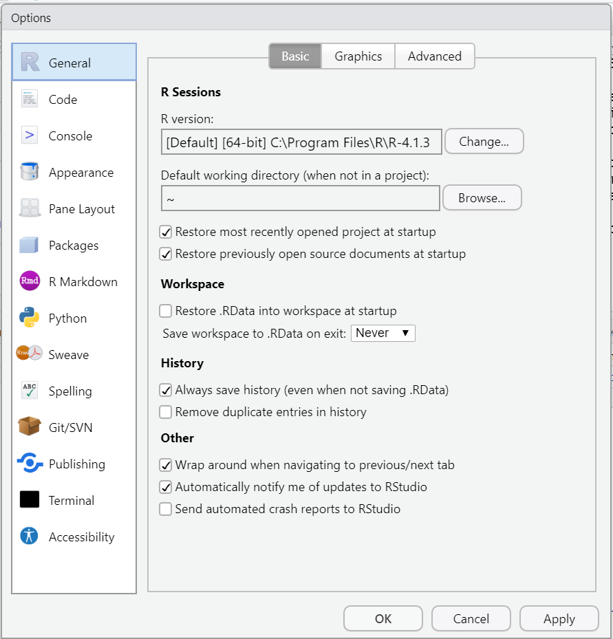

1 R Foundations
A condensed, interactive version of this content is available as a Colab notebook, which can be accessed by clicking or scanning the QR code below.
 This work is licensed under a Creative Commons Attribution-NonCommercial-ShareAlike 4.0 International License.
This work is licensed under a Creative Commons Attribution-NonCommercial-ShareAlike 4.0 International License.
Meaningful data analysis requires the use of computer software.
R statistical software (R Core Team 2024) is one of the most popular tools for data analysis in academia, industry, and government. In what follows, we will learn foundational knowledge and skills that we need to effectively perform data analysis in R. Our discussion will not be exhaustive, and many other important aspects of data analysis using R (like plotting) will be discussed later, as needed.
1.1 Setting up R and RStudio Desktop
1.1.1 What is R?
R is a programming language and environment designed for statistical computing. It was introduced by Robert Gentleman and Robert Ihaka in 1993 as a free implementation of the S programming language developed at Bell Laboratories (https://www.r-project.org/about.html)
Some important facts about R are that:
- R is free, open source, and runs on many different types of computers (Windows, Mac, Linux, and others).
- R is an interactive programming language.
- We can type and run a command in the Console for immediate feedback, in contrast to a compiled programming language, which compiles a program that is then executed.
- R is highly extendable.
- We can extend the functionality of R beyond what is available by default by installing user-created packages.
- We can write our own functions to add additional capabilities to R.
1.1.2 Installing R
To install R on our personal computer, we will need to download an installer program from the R Project’s website (https://www.r-project.org/). Links to download the installer program for a specific operating system are found at https://cloud.r-project.org/.
We should click on the download link appropriate for our computer’s operating system and then go through the process of installing R. A stable link for the most current installer program for the Windows operating system is available at https://cloud.r-project.org/bin/windows/base/release.html. (Similar links are not currently available for Mac and Linux computers.)
1.1.3 Installing RStudio
RStudio Desktop is a free “front end” for R provided by Posit Software (https://posit.co/). RStudio Desktop makes doing data analysis with R much easier by adding an Integrated Development Environment (IDE) and providing many other features. Currently, we can download RStudio at https://posit.co/download/rstudio-desktop/. We should download the Free version of RStudio Desktop appropriate for our computer and install it.
Having installed both R and RStudio Desktop, we will want to open RStudio Desktop as we continue to learn about R.
1.1.4 RStudio Layout
RStudio Desktop has four panes:
- Console: the pane where commands are run.
- Source: the pane where we prepare commands to run.
- Environment/History: the pane where we can see all the objects in our workspace, our command history, and other information.
- Files/Plot/Packages/Help: the pane where we navigate between directories, view plots, see the packages available to be loaded, or get help.
To see all RStudio panes, press the keys Ctrl + Alt + Shift + 0 on a PC or Cmd + Option + Shift + 0 on a Mac.
Figure 1.1 displays a labeled graphic of the panes. The position of the panes can change depending on how we set the display preferences, but the look of each pane will be similar.
1.1.5 Customizing the RStudio workspace
At this point, we should customize our workspace to prevent us from experiencing future frustration. R provides a “feature” that allows us to “save a workspace”. This allows us to easily pick up our analysis where we last left off. Unfortunately, over time, we will accumulate many environmental artifacts that can conflict with each other. This can lead to errors and incorrect results that we will need to deal with. Additionally, this “feature” hinders the ability of others to reproduce our analysis because other users will not have the same workspace.
To turn off this feature, in the RStudio menu bar, we click Tools → Global Options and then make sure the “General” option is selected. Then we make the following changes (if necessary):
- Uncheck the box for “Restore .RData into workspace at startup”.
- Change the toggle box for “Save workspace to .RData on exit” to “Never”.
- Click “Apply” then “OK” to save the changes.
Figure 1.2 displays what these options should look like.

1.2 Running code, scripts, and comments
We can run code in R by typing it in the Console next to the > symbol and pressing the Enter key.
If we need to successively run multiple commands, it’s better to write our commands in a “script” file and then save the file. The commands in a Script file are often generically referred to as “code”.
Script files make it easy to:
- Reproduce our data analysis without retyping all our commands.
- Share our code with others.
A new Script file can be obtained by:
- Clicking File → New File → R Script in the RStudio menu bar.
- Pressing
Ctrl + Shift + non a PC orCmd + Shift + non a Mac.
There are various ways to run code from a Script file. The most common ones are:
- Highlight the code we want to run and click the “Run” button at the top of the Script pane. Figure 1.3 displays the Run button.
- Highlight the code we want to run and press
Ctrl + Enteron our keyboard. If we don’t highlight anything, by default, RStudio runs the command the cursor currently lies on.
To save a Script file:
- Click File → Save in the RStudio menu bar.
- Press
Ctrl + son a PC orCmd + son a Mac.
A comment is a set of text ignored by R when submitted to the Console. The # symbol indicates the start of a comment. Nothing to the right of the # is executed by the Console. We can comment (or uncomment) multiple lines of code in the Source pane of RStudio by highlighting the code we want to comment and pressing Ctrl + Shift + c on a PC or Cmd + Shift + c on a Mac.
Hands-on Practice
Perform the following tasks:
- Type
1+1in the Console and press the Enter key. - Open a new Script in RStudio.
- Type
mean(1:3)in the Script file. - Type
# mean(1:3)in the Script file. - Run the commands from the Script using an approach mentioned above.
- Save the Script file.
- Use the keyboard shortcut to “comment out” some of the lines of the Script file.
1.3 Assignment
R works on various types of objects that we’ll learn more about later.
To store an object in the computer’s memory, we must assign it a name using the assignment operator (<-) or the equal sign (=).
Some comments:
- In general, both
<-and=can be used for assignment. - Pressing
Alt + -on a PC orOption + -on a Mac will insert<-into the R Console and Script files.- If we are creating an R Markdown (rmd) or Quarto Markdown (qmd) file, then this shortcut will only insert
<-if we are in an R code block.
- If we are creating an R Markdown (rmd) or Quarto Markdown (qmd) file, then this shortcut will only insert
<-and=are NOT synonyms, but can be used identically most of the time.
It is best to use <- for assigning a name to an object and reserving = for specifying function arguments. See Section Section 1.14.1 for a deeper explanation.
Once an object has been assigned a name, it can be printed by running the name of the object in the Console or using the print function.
Hands-on Practice
Run the following commands in the Console:
m <- mean(1:10)In the code above, we compute the sample mean of the values \(1, 2, \ldots, 10\), then assign it the name m. However, nothing is printed by the R Console.
mWhen we type the name of an object in the R Console and run the command, R will print at least some of the information in the object. In this case, the value stored in m, the value 5.5, will be returned.
print(m)The command above is a formal way of printing an object in R and can be especially useful when an object has a defined print method with additional arguments. We will discuss this later when it is relevant.
1.4 Functions
A function is an object that performs a certain action or set of actions based on the objects it receives from its arguments. We use a sequence of function calls to perform data analysis.
We use a function by typing the function’s name in the Console (or Script), supplying the function’s arguments between parentheses, (), and then pressing the Enter key.
The arguments of a function are pieces of data or information that the function needs to perform the requested task (i.e., the function “inputs”). Each argument we supply is separated by a comma, ,. Some functions have default values for certain arguments and do not need to specified unless something besides the default behavior is desired.
The mean function computes the sample mean of an R object x. (We can look at the documentation for the function by running ?mean in the Console. We’ll talk more about getting help with R shortly.) The mean function also has a trim argument that indicates the, “… fraction … of observations to be trimmed from each end of x before the mean is computed” (R Core Team 2024, ?mean).
Consider the command below, in which we compute the mean of the set of values 1, 5, 3, 2, 10.
mean(c(1, 5, 3, 4, 10))[1] 4.6In the next command, we compute a trimmed mean of the numeric vector. Since the trim argument is 0.2, we “trim” the smallest 20% of values and the largest 20% of values from the numeric vector prior to computing the mean.
mean(c(1, 5, 3, 4, 10), trim = 0.2)[1] 4In the first function call, we compute (1 + 5 + 3 + 4 + 10)/5 = 23/5 = 4.6. In the second function call, we remove the smallest 20% and largest 20% of the values (i.e., dropping 1 and 10) and compute (5 + 3 + 4)/3 = 12/3 = 4.
1.5 Packages
Packages are collections of functions, data, and other objects that extend the functionality available in R by default.
R packages can be installed using the install.packages function and loaded using the library function.
Hands-on Practice
The tidyverse (Wickham 2023c) is a popular ecosystem of R packages used for manipulating, tidying, and plotting data. Currently, the tidyverse is comprised of the following packages:
- ggplot2: A package for plotting based on the “Grammar of Graphics” (Wickham et al. 2024).
- purrr: A package for functional programming (Wickham and Henry 2023).
- tibble: A package providing a more advanced data frame (Müller and Wickham 2023).
- dplyr: A package for manipulating data (Wickham et al. 2023). More specifically, it provides ” a grammar of data manipulation”.
- tidyr: A package to help create “tidy” data (Wickham, Vaughan, and Girlich 2024). Tidy data is a data organization style often convenient for data analysis.
- stringr: A package for working with character/string data (Wickham 2023b).
- readr: A package for importing data (Wickham, Hester, and Bryan 2024).
- forcats: A package for working with categorical data (Wickham 2023a).
Install the set of tidyverse R packages by running the command below in the Console.
install.packages("tidyverse")After we install the tidyverse, we load the collection of packages by running the command below.
library(tidyverse)We should see something like the output below.
library(tidyverse)── Attaching core tidyverse packages ──────────────────────── tidyverse 2.0.0 ──
✔ dplyr 1.1.4 ✔ readr 2.1.5
✔ forcats 1.0.0 ✔ stringr 1.5.1
✔ ggplot2 3.5.1 ✔ tibble 3.2.1
✔ lubridate 1.9.3 ✔ tidyr 1.3.1
✔ purrr 1.0.2
── Conflicts ────────────────────────────────────────── tidyverse_conflicts() ──
✖ dplyr::filter() masks stats::filter()
✖ dplyr::lag() masks stats::lag()
ℹ Use the conflicted package (<http://conflicted.r-lib.org/>) to force all conflicts to become errorsWhen we loaded the tidyverse package above, notice that dplyr::lag() masks stats::lag(). “Masking” means that functions or objects from different packages have the same name. In this case, both the dplyr and stats packages have a function called lag. Different packages may use the same function name to provide certain functionality. The functions will likely be used for different tasks or require different arguments.
To refer to a function in a specific package, we should add the syntax package:: prior to the function name. In the code below, we run stats::lag and dplyr::lag on two different objects using the :: syntax.
# run stats::lag on a numeric vector
stats::lag(1:10, 2) [1] 1 2 3 4 5 6 7 8 9 10
attr(,"tsp")
[1] -1 8 1# run dplyr::lag on a numeric vector
dplyr::lag(1:10, 2) [1] NA NA 1 2 3 4 5 6 7 8The output returned by the two functions is different because the functions are intended to do different things. The stats::lag function call shifts the time base of the provided time series object back 2 units, while the call to dplyr::lag provides the values 2 positions earlier in the object.
Note: this example is not intended to help us understand the lag function. This example highlights how to use the :: syntax to call a function in a specific package when the function name is used in multiple packages.
1.6 Getting help
There are many ways to get help in R.
If we know the command for which we want help, then we run ?command in the Console to access the documentation for the object (where command is replaced by the name of the relevant command). This approach will also work with data sets, package names, object classes, etc. If we need to refer to a function in a specific package, we can use ?package::function to get help on a specific function, e.g., ?dplyr::filter.
The documentation will provide:
- A Description section with general information about the function or object.
- A Usage section with a generic template for using the function or object.
- An Arguments section summarizing the inputs the function needs.
- A Details section may be provided with additional information about the function or object.
- A Value section that describes what is returned by the function.
- An Examples section providing examples of how to use the function. Usually, these can be copied and pasted into the Console to better understand the function arguments and what it produces.
If we need to find a command related to a certain topic, then ??topic will search for the topic through all installed documentation and bring up any vignettes, code demonstrations, or help pages that include the topic for which we searched.
If we are trying to figure out why an error is being produced, what packages can be used to perform a certain analysis, how to perform a complex task that we can’t seem to figure out, etc., then we can simply do a web search for what we’re trying to figure out! Because R is such a popular programming language, it is likely we will find a stackoverflow response, a helpful blog post, an R users forum response, etc., that addresses our question.
Lastly, we can query artificial intelligence chatbots with questions about how to use R to perform a certain analysis or how to fix bugs in our code.
Hands-on Practice
Do the following:
- Run
?lmin the Console to get help on thelmfunction, which is one of the main functions used for fitting linear models. - Run
??logarithmsin the Console to search the R documentation for information about logarithms. It is likely that we will see multiple help pages that mention “logarithm”, so we may end up needing to find the desired entry via trial and error. - Run a web search for something along the lines of “How do I change the size of the axis labels in an R plot?”.
- Query an artificial intelligence chatbot regarding how to create a scatter plot using base R. Were the results useful and correct?
1.7 Data types and structures
1.7.1 Basic data types
R has 6 basic (“atomic”) vector types (https://cran.r-project.org/doc/manuals/r-release/R-lang.html#Basic-types) (R Core Team 2024):
character: collections of characters. E.g.,"a","hello world!".double: decimal numbers. e.g.,1.2,1.0.integer: positive and negative whole numbers. In R, we must addLto the end of a number to specify it as an integer. E.g.,1Lis an integer but1is a double.logical: Boolean values,TRUEandFALSE.complex: complex numbers. E.g.,1+3i.raw: a type to hold raw bytes.
Both double and integer values are specific types of numeric values.
The typeof function returns the R internal type or storage mode of any object.
Consider the output of the commands below. How does the output differ?
typeof(1)[1] "double"typeof(1L)[1] "integer"typeof("hello world!")[1] "character"1.7.2 Other important object types
There are other important types of objects in R that are not basic. We will discuss a few. The R Project manual provides additional information about available types (https://cran.r-project.org/doc/manuals/r-release/R-lang.html#Basic-types).
1.7.2.1 Numeric
An object is numeric if it is of type integer or double. In that case, it’s mode is said to be numeric.
The is.numeric function tests whether an object can be interpreted as a set of numbers. In the code below, we use the is.numeric function to query whether certain objects are numeric.
is.numeric("1")[1] FALSEis.numeric(1)[1] TRUEis.numeric(1L)[1] TRUE1.7.2.2 NULL
NULL is a special object to indicate an object is absent. An object having a length of zero is not the same thing as an object being absent.
1.7.2.3 NA
A “missing value” occurs when the value of an object isn’t known. R uses the special object NA to represent a missing value.
If we have a missing value, we should represent that value as NA. "NA" is not the same object as NA.
1.7.2.4 Functions
From R’s perspective, a function is simply another data type.
1.7.2.5 A comment about classes
Every R object has a class that may be distinct from its type. Many functions will operate differently depending on an object’s class.
1.7.3 Data structures
R operates on data structures. A data structure is a “container” that holds certain kinds of information.
R has 5 basic data structures:
- vector.
- matrix.
- array.
- data frame.
- list.
Vectors, matrices, and arrays are homogeneous objects that can only store a single data type at a time. Data frames and lists can store multiple data types.
Vectors and lists are considered one-dimensional objects. A list is technically a vector. Vectors of a single type are atomic vectors (https://cran.r-project.org/doc/manuals/r-release/R-lang.html#List-objects). Matrices and data frames are considered two-dimensional objects. Arrays can have one or more dimensions.
Table 1.1 summarizes the relationship between dimensionality and data type for the basic data structures. It is based on a table in the first edition of Hadley Wickham’s Advanced R (Wickham 2019).
| number of dimensions | homogeneous data type | heterogeneous data types |
|---|---|---|
| 1 | atomic vector | list |
| 2 | matrix | data frame |
| 1 or more | array |
1.8 Vectors
A vector is a one-dimensional set of data of the same type.
1.8.1 Direct creation
The most basic way to create a vector is the c (combine) function. The c function combines values into an atomic vector or list.
The following commands create vectors of type numeric, character, and logical, respectively.
c(1, 2, 5.3, 6, -2, 4)c("one", "two", "three")c(TRUE, TRUE, FALSE, TRUE)
1.8.2 Hands-on Practice
Run the commands below in the Console.
c(1, 2, 5.3, 6, -2, 4)c("one", "two", "three")c(TRUE, TRUE, FALSE, TRUE)R provides two main functions for creating vectors with specific patterns: seq and rep.
1.8.3 The seq function
The seq (sequence) function is used to create an equidistant series of numeric values. We provide some examples of using the seq function below:
seq(1, 10)creates a sequence of numbers from 1 to 10 in increments of 1.1:10creates a sequence of numbers from 1 to 10 in increments of 1.seq(1, 20, by = 2)creates a sequence of numbers from 1 to 20 in increments of 2.seq(10, 20, len = 10)creates a sequence of numbers from 10 to 20 of length 10.
Hands-on Practice
Run the commands below in the Console and try to answer the questions below.
- What does the
byargument of theseqfunction control? - What does the
lenargument of theseqfunction control?
seq(1, 10)1:10seq(1, 20, by = 2)seq(10, 20, len = 10)1.8.4 The rep function
The rep (replicate) function can be used to create a vector by replicating values. We provide some examples of using the rep function below:
rep(1:3, times = 3)replicates the sequence1, 2, 3three times in a row.rep(c("trt1", "trt2", "trt3"), times = 1:3)replicates"trt1"once,"trt2"twice, and"trt3"three times.rep(1:3, each = 3)replicates each element of the sequence 1, 2, 3 three times.
Hands-on Practice
Run the commands below in the Console and try to answer the questions below.
- What does the
timesargument of therepfunction control? - What does the
eachargument of therepfunction control?
rep(1:3, times = 3)rep(c("trt1", "trt2", "trt3"), times = 1:3)rep(1:3, each = 3)1.8.5 Combining vectors
Multiple vectors of the same type can be combined into a new vector object using the c function. E.g., c(v1, v2, v3) will combine vectors v1, v2, and v3.
Hands-on Practice
Run the commands below in the Console. Determine what action each command performs.
v1 <- 1:5v2 <- c(1, 10, 11)v3 <- rep(1:2, each = 3)new <- c(v1, v2, v3)new1.8.6 Categorical vectors
Categorical data should be stored as a factor in R. Sometimes, we might naively store categorical data as character or numeric objects for simplicity. In that situation, our code might still work because a cautious developer planned for our laziness, but it is best to use good coding practices that minimize potential issues. For that reason, represent categorical data as a factor.
1.8.6.1 Creating a factor object
The factor function takes a vector of values that can be coerced to type character and converts them to an object of class factor. In the code chunks below, we create two factor objects from vectors.
f1 <- factor(rep(1:6, times = 3))
f1 [1] 1 2 3 4 5 6 1 2 3 4 5 6 1 2 3 4 5 6
Levels: 1 2 3 4 5 6f2 <- factor(c("a", 7, "blue", "blue", FALSE))
f2[1] a 7 blue blue FALSE
Levels: 7 a blue FALSEA printed factor object lists the Levels (i.e., unique categories) of the object.
The is.factor function can be used to determine whether an object is a factor.
factor objects aren’t technically vectors (e.g., running is.factor(f2) based on the above code will return FALSE) though they essentially behave like vectors, which is why discuss them here.
Hands-on Practice
Complete the following tasks:
- Create a vector named
grpthat has two levels:aandb, where the first 7 values areaand the second 4 values areb. - Run
is.factor(grp)in the Console. - Run
is.vector(grp)in the Console. - Run
typeof(grp)in the Console.
Related to the last task, a factor object is technically a collection of integers that have labels associated with each unique integer value.
1.8.6.2 Creating an ordered factor object
Categorical data sometimes has a natural ordering that we want to acknowledge in our analysis. E.g., we may have categorical data with the levels small, medium, and large. The levels have a natural ordering (either smallest to largest or vice versa, depending on the context).
Suppose we create the size vector with character values "small", "medium", and "large".
size <- c("small", "medium", "small", "large", "medium", "medium", "large")If we convert size to a factor object, R will automatically order the levels of size alphabetically, as seen from the code chunk below.
factor(size)[1] small medium small large medium medium large
Levels: large medium smallThis is not technically a problem, but can result in undesirable side effects such as plots with levels in an undesirable order.
To create an ordered factor object, we specify the desired order of the levels using the levels argument and set the ordered argument to TRUE, as in the code below.
factor(size, levels = c("small", "medium", "large"), ordered = TRUE)[1] small medium small large medium medium large
Levels: small < medium < large1.8.7 Extracting parts of a vector
Parts a vector can be extracted by appending an index vector in square brackets [] to the name of the vector, where the index vector indicates which parts of the vector to retain or exclude. We can include either numbers or logical values in our index vector. We discuss both approaches below.
1.8.7.1 Selection using a numeric index vector
Let’s create a numeric vector a with the values 2, 4, 6, 8, 10, 12, 14, 16.
a <- seq(2, 16, by = 2)
a[1] 2 4 6 8 10 12 14 16To extract the 2nd, 4th, and 6th elements of a, we can use the code below. The code indicates that the 2nd, 4th, and 6th elements of a should be extracted.
a[c(2, 4, 6)][1] 4 8 12We can also use “negative” indexing to indicate the elements of the vector we want to exclude. Specifically, supplying a negative index vector indicates the values we want to exclude from our selection.
In the example below, we use the minus (-) sign in front of the index vector c(2, 4, 6) to indicate we want all elements of a EXCEPT the 2nd, 4th, and 6th.
a[-c(2, 4, 6)][1] 2 6 10 14 16Running the code chunk below excludes the 3rd through 6th elements of a.
a[-(3:6)][1] 2 4 14 161.8.7.2 Logical expressions
A logical expression uses one or more logical operators to determine which elements of an object satisfy the specified statement. The basic logical operators are:
<,<=: less than, less than or equal to.>,>=: greater than, greater than or equal to.==: equal to.!=: not equal to.
Creating a logical expression with a vector will result in a logical vector indicating whether each element satisfies the logical expression.
Hands-on Practice
Run the following commands in R and see what is printed. What task is each statement performing?
a > 10a <= 4a == 10a != 101.8.7.3 The “and”, “or”, and “not” operators
We can create more complicated logical expressions using the “and”, “or”, and “not” operators.
&: and.|: or.!: not, i.e., not true.
The & operator returns TRUE if all logical values connected by the & are TRUE, otherwise it returns FALSE.
The | operator returns TRUE if any logical values connected by the | are TRUE, otherwise it returns FALSE.
The ! operator returns the complement of a logical value or expression.
Hands-on Practice
Run the following commands below in the Console.
- What role does
&serve in a sequence of logical values? - What role does
|serve in a sequence of logical values? - What role does
!serve in a sequence of logical values?
TRUE & TRUE & TRUETRUE & TRUE & FALSEFALSE | TRUE | FALSEFALSE | FALSE | FALSE!TRUE!FALSE1.8.7.4 Connecting logical expressions
Logical expressions can be connected via & and | (and impacted via !), in which case the operators are applied elementwise (i.e., to all of the first elements in the expressions, then all the second elements in the expressions, etc).
Hands-on Practice
Run the following commands in R and see what is printed. What task is each statement performing?
Note that the parentheses () are used to group logical expressions to more easily understand what is being done. This is a good coding style to follow.
(a > 6) & (a <= 10)(a <= 4) | (a >= 12)!((a <= 4) | (a >= 12))1.8.7.5 Selection using logical expressions
Logical expressions can be used to return parts of an object satisfying the appropriate criteria. Specifically, we pass logical expressions within the square brackets to access part of a data structure. This syntax will return each element of the object for which the expression is TRUE.
Hands-on Practice
Run the following commands in R and see what is printed. What task is each statement performing?
a[a < 6]a[a == 10]a[(a < 6)|(a == 10)]1.9 Helpful functions
We provide a brief overview of R functions we often use in our data analysis.
1.9.1 General functions
For brevity, Table 1.2 provides a table of functions commonly useful for basic data analysis along with a description of their purpose.
| function. | purpose |
|---|---|
length |
Determines the length/number of elements in an object. |
sum |
Sums the elements in the object. |
mean |
Computes the sample mean of the elements in an object. |
var |
Computes the sample variance of the elements in an object. |
sd |
Computes the sample standard deviation the elements of an object. |
range |
Determines the range (minimum and maximum) of the elements of an object. |
log |
Computes the (natural) logarithm of elements in an object. |
summary |
Returns a summary of an object. The output changes depending on the class type of the object. |
str |
Provides information about the structure of an object. Usually, the class of the object and some information about its size. |
Hands-on Practice
Run the following commands in the Console. Determine what task each command is performing.
x <- rexp(100) # sample 100 iid values from an Exponential(1) distributionlength(x)sum(x)mean(x)var(x)sd(x)range(x)log(x)summary(x)str(x) # structure of xHands-on Practice
Run the following commands in R to see the output. Before each command is a description of the action performed by the command.
pnorm(1.96, mean = 0, sd = 1) returns the probability that a standard normal random variable is less than or equal to 1.96, i.e., \(P(X \leq 1.96)\).
pnorm(1.96, mean = 0, sd = 1)qunif(0.6, min = 0, max = 1) returns the value \(x\) such that \(P(X\leq x) = 0.6\) for a uniform random variable on the interval \([0, 1]\).
qunif(0.6, min = 0, max = 1)dbinom(2, size = 20, prob = .2) returns the probability that \(X\) equals 2 when \(X\) has a Binomial distribution with \(n=20\) trials and the probability of a successful trial is \(0.2\).
dbinom(2, size = 20, prob = .2)dexp(1, rate = 2) evaluates the density of an exponential random variable with mean = 1/2 (i.e., the reciprocal of the rate) at \(x=1\).
dexp(1, rate = 2)rchisq(10, df = 5) draws a sample of 10 observations from a chi-squared random variable with 5 degrees of freedom.
rchisq(10, df = 5)1.10 Data Frames
Data frames are a fundamental data structure used by most of R’s modeling functions. Data frames are two-dimensional data objects where each column of a data frame is a vector (or variable) of possibly different data types. The class of a base R data frame is data.frame, which is technically a specially structured list.
In general, we prefer our data to be tidy, which means that each variable forms a column of the data frame, and each observation forms a row.
1.10.1 Direct creation
Data frames are directly created by passing vectors into the data.frame function. The names of the columns in the data frame are the names of the vectors we give the data.frame function. Consider the following simple example.
# simple data frame creation
d <- c(1, 2, 3, 4)
e <- c("red", "white", "blue", NA)
f <- c(TRUE, TRUE, TRUE, FALSE)
df <- data.frame(d,e,f)
df d e f
1 1 red TRUE
2 2 white TRUE
3 3 blue TRUE
4 4 <NA> FALSEThe columns of a data frame can be renamed using the names function on the data frame and assigning a vector of names to the data frame.
# name columns of data frame
names(df) <- c("ID", "Color", "Passed")
df ID Color Passed
1 1 red TRUE
2 2 white TRUE
3 3 blue TRUE
4 4 <NA> FALSEThe columns of a data frame can be named when we create the data frame by using the syntax name = for each vector of data.
# create data frame with better column names
df2 <- data.frame(ID = d, Color = e, Passed = f)
df2 ID Color Passed
1 1 red TRUE
2 2 white TRUE
3 3 blue TRUE
4 4 <NA> FALSE1.10.2 Importing Data
Direct creation of data frames is only appropriate for very small data sets. In practice, we will import data from a file into R.
The read.table function imports data in table format from file into R as a data frame.
The basic usage of this function is: read.table(file, header = TRUE, sep = ",").
fileis the file path and name of the file we want to import into R.- If we don’t know the file path, setting
file = file.choose()will bring up a dialog box asking us to locate the file we want to import.
- If we don’t know the file path, setting
headerspecifies whether the data file has a header (variable labels for each column of data in the first row of the data file).- If we don’t specify this option in R or specify
header = FALSE, then R will assume the file doesn’t have any headings. header = TRUEtells R to read in the data as a data frame with column names taken from the first row of the data file.
- If we don’t specify this option in R or specify
sepspecifies the delimiter separating elements in the file.- If each column of data in the file is separated by a space, then use
sep = " ". - If each column of data in the file is separated by a comma, then use
sep = ",". - If each column of data in the file is separated by a tab, then use
sep = "\t".
- If each column of data in the file is separated by a space, then use
Hands-on Practice
Consider reading in a csv (comma separated file) with a header.
The file in question is available in the api2lm package (French 2023) and contains crime-related information for U.S. states for the year 2009. However, we will import the data directly from a location where it is stored on GitHub.
In the code below, we specify the path of the file prior to specifying the file name (crime2009.csv). Since the file has a header, we specify header = TRUE. Since the data values are separated by commas, we specify sep = ",".
# specify file path
path <- "https://raw.githubusercontent.com/jfrench/api2lm/main/inst/extdata/crime2009.csv"
# import data as data frame
crime2009 <- read.table(file = path, header = TRUE, sep = ",")
# view data structure
str(crime2009)'data.frame': 51 obs. of 8 variables:
$ state : chr "Alabama" "Alaska" "Arizona" "Arkansas" ...
$ violent: num 460 633 423 530 473 ...
$ murder : num 7.1 3.2 5.5 6.3 5.4 3.2 3 4.6 24.2 5.5 ...
$ hs_grad: num 82.1 91.4 84.2 82.4 80.6 89.3 88.6 87.4 87.1 85.3 ...
$ poverty: num 17.5 9 16.5 18.8 14.2 12.9 9.4 10.8 18.4 14.9 ...
$ single : num 29 25.5 25.7 26.3 27.8 21.4 25 27.6 48 26.6 ...
$ white : num 70 68.3 80 78.4 62.7 84.6 79.1 71.9 38.7 76.9 ...
$ urban : num 48.6 44.5 80.1 39.5 89.7 ...Running str on the data frame gives us a general picture of the values stored in the data frame, the variable names, and the default variable types.
The read_table function in the readr package (Wickham, Hester, and Bryan 2024) is arguably a better way of importing tabular data from file and uses similar syntax. We can import data contained in a Microsoft Excel file using functions available in the readxl package (Wickham and Bryan 2023).
1.10.3 Extracting parts of a data frame
R provides many ways to extract parts of a data frame. We will provide several examples using the mtcars data frame in the datasets package.
The mtcars data frame has 32 observations for 11 variables. The variables are:
mpg: miles per gallon.cyl: number of cylinders.disp: engine displacement (cubic inches).hp: horsepower.drat: rear axle ratio.wt: weight in 1000s of pounds.qsec: time in seconds to travel 0.25 of a mile.vs: engine shape (0 = V-shaped, 1 = straight).am: transmission type (0 = automatic, 1 = manual).gear: number of forward gears.carb: number of carburetors.
We load the data set and examine the basic structure by running the commands below.
data(mtcars) # load data set
str(mtcars) # examine data structure'data.frame': 32 obs. of 11 variables:
$ mpg : num 21 21 22.8 21.4 18.7 18.1 14.3 24.4 22.8 19.2 ...
$ cyl : num 6 6 4 6 8 6 8 4 4 6 ...
$ disp: num 160 160 108 258 360 ...
$ hp : num 110 110 93 110 175 105 245 62 95 123 ...
$ drat: num 3.9 3.9 3.85 3.08 3.15 2.76 3.21 3.69 3.92 3.92 ...
$ wt : num 2.62 2.88 2.32 3.21 3.44 ...
$ qsec: num 16.5 17 18.6 19.4 17 ...
$ vs : num 0 0 1 1 0 1 0 1 1 1 ...
$ am : num 1 1 1 0 0 0 0 0 0 0 ...
$ gear: num 4 4 4 3 3 3 3 4 4 4 ...
$ carb: num 4 4 1 1 2 1 4 2 2 4 ...We should do some data cleaning on this data set (see Chapter 2), but we will refrain from this for simplicity.
1.10.3.1 Direct extraction
The column variables of a data frame may be extracted from a data frame by specifying the data frame’s name, then $, and then specifying the name of the desired variable. This pulls the actual variable vector out of the data frame, so the thing extracted is a vector, not a data frame.
Below, we extract the mpg variable from the mtcars data frame.
mtcars$mpg [1] 21.0 21.0 22.8 21.4 18.7 18.1 14.3 24.4 22.8 19.2 17.8 16.4 17.3 15.2 10.4
[16] 10.4 14.7 32.4 30.4 33.9 21.5 15.5 15.2 13.3 19.2 27.3 26.0 30.4 15.8 19.7
[31] 15.0 21.4Another way to extract a variable from a data frame as a vector is df[, "var"], where df is the name of our data frame and var is the desired variable name. We extract the mpg vector from mtcars below.
mtcars[,"mpg"] [1] 21.0 21.0 22.8 21.4 18.7 18.1 14.3 24.4 22.8 19.2 17.8 16.4 17.3 15.2 10.4
[16] 10.4 14.7 32.4 30.4 33.9 21.5 15.5 15.2 13.3 19.2 27.3 26.0 30.4 15.8 19.7
[31] 15.0 21.4The syntax above is a special case of extracting information from a data frame using df[rows, columns] style syntax, where rows and columns indicate the desired rows or columns to extract. If either the rows or columns are left blank, then all rows or columns, respectively, are extracted.
The df[rows, columns] syntax has confusing behavior when we only specify a single column. Specifically, the [ operator has a drop argument that is set to TRUE by default. The drop argument controls whether the result is coerced to the lowest possible dimension. If we we only extract a single column of our data frame using [, then R will coerce the result to a vector by default.
To get around the default drop behavior we can change the drop argument to FALSE, as shown below. We only retain the first 5 rows for brevity.
# extract mpg variable, keep as data frame
mtcars[1:5, "mpg", drop = FALSE] mpg
Mazda RX4 21.0
Mazda RX4 Wag 21.0
Datsun 710 22.8
Hornet 4 Drive 21.4
Hornet Sportabout 18.7An easier approach to avoiding the default drop behavior is to use the slightly different syntax df["var"] (notice we no longer have the comma to separate rows and columns). We use this syntax below for the mpg variable in mtcars. For brevity, we use the print method for a data.frame object and specify the max argument to limit the number of data frame entries we print.
# extract mpg variable, keep as data frame, show only 5 rows
print(mtcars["mpg"], max = 5) mpg
Mazda RX4 21.0
Mazda RX4 Wag 21.0
Datsun 710 22.8
Hornet 4 Drive 21.4
Hornet Sportabout 18.7
[ reached 'max' / getOption("max.print") -- omitted 27 rows ]To select multiple variables in a data frame, we can provide a character vector with multiple variable names between []. In the example below, we extract both the mpg and cyl variables from mtcars.
print(mtcars[c("mpg", "cyl")], max = 10) mpg cyl
Mazda RX4 21.0 6
Mazda RX4 Wag 21.0 6
Datsun 710 22.8 4
Hornet 4 Drive 21.4 6
Hornet Sportabout 18.7 8
[ reached 'max' / getOption("max.print") -- omitted 27 rows ]We can also use numeric indices to directly indicate the rows or columns of the data frame that we would like to extract. We can also combine this syntax style with the syntax styles previously discussed.
df[1,]accesses the first row ofdf.df[1:2,]accesses the first two rows ofdf.df[, 2]accesses the second column ofdf.df[1:2, 2:3]accesses the information in rows 1 and 2 of columns 2 and 3 ofdf.df[c(1, 3, 5), c("var1", "var2")]accesses the information in rows 1, 3, and 5 of thevar1andvar2variables.
We practice these techniques below.
Hands-on Practice
Run the following commands in the Console. Determine what task each command is performing.
df3 <- data.frame(numbers = 1:5,
characters = letters[1:5],
logicals = c(TRUE, TRUE, FALSE, TRUE, FALSE))df3df3$logicalsdf3[1, ]df3[, 3]df3[, 2:3]df3[, c("numbers", "logicals")]df3[c("numbers", "logicals")]1.10.3.2 Extraction using logical expressions
Logical expressions can be used to subset a data frame.
To select specific rows of a data frame, we use the syntax df[logical vector, ], where logical vector is a valid logical vector whose length matches the number of rows in the data frame. Usually, the logical vector is created using a logical expression involving one or more data frame variables. In the code below, we extract the rows of the mtcars data frame for which the hp variable is more than 250.
mtcars[mtcars$hp > 250,] mpg cyl disp hp drat wt qsec vs am gear carb
Ford Pantera L 15.8 8 351 264 4.22 3.17 14.5 0 1 5 4
Maserati Bora 15.0 8 301 335 3.54 3.57 14.6 0 1 5 8We can make the logical expression more complicated and also select specific variables using the syntax discussed in Section 1.10.3.1. Below, we extract the rows of mtcars with 8 cylinders and mpg > 17, while extracting only the mpg, cyl, disp, and hp variables.
# return rows with `cyl == 8` and `mpg > 17`
# return columns mpg, cyl, disp, hp
mtcars[mtcars$cyl == 8 & mtcars$mpg > 17, c("mpg", "cyl", "disp", "hp")] mpg cyl disp hp
Hornet Sportabout 18.7 8 360.0 175
Merc 450SL 17.3 8 275.8 180
Pontiac Firebird 19.2 8 400.0 1751.10.3.3 Extraction using the subset function
The techniques for extracting parts of a data frame discussed in -Section 1.10.3.1 and -Section 1.10.3.2 are the fundamental approaches for selecting desired parts of a data frame. However, these techniques can seem complex and difficult to interpret, particularly when looking back at code we have written in the past. A sleeker approach to extracting part of a data frame is to use the subset function.
The subset function returns the elements of a data frame that meets the specified conditions. The basic usage of this function is: subset(x, subset, select, drop = FALSE)
xis the object we want to subset.xcan be a vector, matrix, or data frame.
subsetis a logical expression that indicates the elements or rows ofxto keep (TRUEmeans keep).selectis a vector that indicates the columns to keep.dropis a logical value indicating whether the data frame should “drop” into a vector if only a single row or column is kept. The default isFALSE, meaning that a data frame will always be returned by thesubsetfunction by default.
There are many clever ways of using subset to select specific parts of a data frame. We encourage the reader to run ?base::subset in the Console for more details.
Hands-on Practice
Run the following commands in the Console to use the subset function to extract parts of the mtcars data frame.
The command below subsets the rows of mtcars that have more than 4 gears. Note that any variables referred to in the subset function are assumed to be part of the supplied data frame or are available in memory.
subset(mtcars, subset = gear > 4)The command below will select the disp, hp, and gear variables of mtcars but will exclude the other columns.
subset(mtcars, select = c(disp, hp, gear))Lastly, we can use the following command to perform the two previous subsetting actions in one step.
subset(mtcars, subset = gear > 4, select = c(disp, hp, gear))An advantage of the subset function is that it makes code easily readable. Using conventional base R syntax, the final code example above would be: mtcars[mtcars$gear>4, c("disp", "hp", "gear")].
It can be difficult to look at base R code and immediately tell what it happening, so the subset function adds clarity. This is important for collaborating with others, including our future selves!
1.10.4 Modifying a Data Frame
Columns can be added to a data frame using $ and the assignment operator. In the example below, we add a new column, kpg, to the mtcars data set based on a transformatino of the mpg column.
mtcars$kpg <- mtcars$mpg*1.6
head(mtcars) mpg cyl disp hp drat wt qsec vs am gear carb kpg
Mazda RX4 21.0 6 160 110 3.90 2.620 16.46 0 1 4 4 33.60
Mazda RX4 Wag 21.0 6 160 110 3.90 2.875 17.02 0 1 4 4 33.60
Datsun 710 22.8 4 108 93 3.85 2.320 18.61 1 1 4 1 36.48
Hornet 4 Drive 21.4 6 258 110 3.08 3.215 19.44 1 0 3 1 34.24
Hornet Sportabout 18.7 8 360 175 3.15 3.440 17.02 0 0 3 2 29.92
Valiant 18.1 6 225 105 2.76 3.460 20.22 1 0 3 1 28.961.11 Using the pipe operator
R’s native pipe operator (|>) allows us to “pipe” the object on the left side of the operator into the first argument of the function on the right side of the operator. There are ways to modify this default behavior, but we will not discuss them.
The pipe operator is a convenient way to string together numerous steps in a string of commands. This coding style is generally considered more readable than other approaches because we can incrementally modify the object through each pipe, and each step of the pipe is easy to understand. Ultimately, it’s a stylistic choice that we can decide to adopt or ignore.
Consider the following approaches to extracting part of mtcars. We choose the rows for which engine displacement is more than 400 and only keep the mpg, disp, and hp columns. We first do this in a single function call using the subset function.
# two styles for selecting certain rows and columns of mtcars
subset(mtcars,
subset = disp > 400,
select = c(mpg, disp, hp)) mpg disp hp
Cadillac Fleetwood 10.4 472 205
Lincoln Continental 10.4 460 215
Chrysler Imperial 14.7 440 230Next, we use the piping approach to break the action into smaller parts.
mtcars |>
subset(subset = disp > 400) |>
subset(select = c(mpg, disp, hp)) mpg disp hp
Cadillac Fleetwood 10.4 472 205
Lincoln Continental 10.4 460 215
Chrysler Imperial 14.7 440 230When reading code with pipes, the pipe can be thought of as the word “then”. In the code above, we take mtcars then subset it based on disp and then select some columns.
Most parts of the world do not use miles per gallon to measure fuel economy because they don’t measure distance in miles nor volume in gallons. A common measure of fuel economy is the liters of fuel required to travel 100 kilometers. Noting that 3.8 liters is approximately equivalent to 1 U.S. gallon and 1.6 kilometers is approximately equivalent to 1 mile, we can convert fuel economy of \(x\) miles per gallon to liters per 100 kilometers by noting:
\[\frac{1}{x}\frac{\mathrm{gal}}{\mathrm{mi}}\times\frac{3.8}{1}\frac{\mathrm{L}}{\mathrm{gal}}\times\frac{1}{1.6}\frac{\mathrm{mi}}{\mathrm{km}}\times\frac{100\;\mathrm{km}}{100\;\mathrm{km}} = \frac{237.5}{x}\frac{\mathrm{L}}{100\;\mathrm{km}}.\]
Thus, to convert from miles per gallon to liters per 100 kilometers, we take 237.5 and divide by the number of miles per gallon.
We consider two approaches for converting the units of a variable in miles per gallon to liters per 100 km. In the first approach, we use the base::transform function create a new variable, lp100km, in the mtcars data frame that describes the liters of fuel each car requires to travel 100 kilometers and assign it the name mtcars2. Then we select only the columns mpg and lp100km from mtcars and assign it the name mtcars3. We then use the head function to print only the first 5 observations. Run ?base::transform in the Console for more details and examples.
# create new variable
mtcars2 <- transform(mtcars, lp100km = 237.5/mpg)
# select certain columns
mtcars3 <- subset(mtcars2, select = c(mpg, lp100km))
# print first 5 rows
head(mtcars3, n = 5) mpg lp100km
Mazda RX4 21.0 11.30952
Mazda RX4 Wag 21.0 11.30952
Datsun 710 22.8 10.41667
Hornet 4 Drive 21.4 11.09813
Hornet Sportabout 18.7 12.70053Next, we perform the actions above with pipes.
# create new variable, select columns, extract first 5 rows
mtcars |>
transform(lp100km = 237.5/mpg) |>
subset(select = c(mpg, lp100km)) |>
head(n = 5) mpg lp100km
Mazda RX4 21.0 11.30952
Mazda RX4 Wag 21.0 11.30952
Datsun 710 22.8 10.41667
Hornet 4 Drive 21.4 11.09813
Hornet Sportabout 18.7 12.700531.12 Dealing with common problems
We are going to have to deal with many errors and problems as we use R. It happens even to the best programmers.
Every problem is unique, but there are common mistakes that we try to provide insight for below.
1.12.1 Error in ...: could not find function "..."
We probably forgot to load the package needed to use the function. We may also have misspelled the function name.
1.12.2 Error: object '...' not found
The object doesn’t exist in loaded memory. Perhaps we forget to assign that name to an object or misspelled the name of the object we are trying to access.
1.12.3 Error in plot.new() : figure margins too large
This typically happens because our Plots pane is too small. We should increase the size of the Plots pane and try again.
1.12.4 Code was working, but isn’t anymore
We may have run code out of order. It may work if we run it in order. Or we may have run something in the Console that we don’t have in our Script file. It is good practice to clear our environment (the objects R has loaded in memory) using the broom icon in the Environment pane and rerunning our entire Script file to ensure it behaves as expected. The broom icon is shown in Figure 1.4.
1.13 Ecosystem debate
In general, we favor performing analysis using base R functionality, which means we try to perform our analysis with features R offers by default. Base R code is easier to maintain since base R features change very slowly and are nearly always backwards compatible. Additionally, base R functions are often faster than alternatives. However, more complicated aspects of regression analysis are not easy to perform using base R, so we will introduce new packages and functions as we progress.
Many readers may have previous experience working with the tidyverse (https://www.tidyverse.org) and wonder how frequently we use tidyverse functionality. The tidyverse offers a unified framework for data manipulation and visualization that tends to be more consistent than base R. However, there are many situations where a base R solution is more straightforward than a tidyverse solution, not to mention the fact that there are many aspects of R programming (e.g., S3 and S4 objects, method dispatch) that require knowledge of base R features. Because the R universe is vast and there are many competing coding styles, we will prioritize analysis approaches using base R, which gives users a stronger programming foundation. However, we will use parts of the tidyverse when it greatly simplifies analysis, data manipulation, or visualization because it provides an extremely useful feature set.
1.14 Going deeper
1.14.1 Comparing assignment operators
As previously mentioned in Section Section 1.3, both <- and = can mostly be used interchangeably for assignment. But there are times when using = for assignment can be problematic. Consider the examples below where we want to use system.time to time how long it takes to draw 100 values from a standard normal distribution and assign it the name result.
This code works:
system.time(result <- rnorm(100)) user system elapsed
0 0 0 This code doesn’t work:
system.time(result = rnorm(100))Error in system.time(result = rnorm(100)): unused argument (result = rnorm(100))What’s the difference? In the second case, R thinks we are setting the result argument of the system.time function (which doesn’t exist) to the value produced by rnorm(100).
Thus, it is best to use <- for assigning a name to an object and reserving = for specifying function arguments.